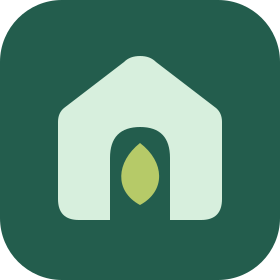

Greenhouse BridgePrivacy Policy
Last updated: 2026-07-03
Greenhouse Bridge is a browser extension that connects the web page you are viewing to your own self-hosted Greenhouse instance. You choose the server by entering its URL and signing in with your Greenhouse account. The extension has no backend of its own and is not operated as a service by anyone else — all data flows only between your browser and the server you configure.
What the extension accesses
- Page content you act on. When you ask a question with page context, or an assistant action reads or operates a tab, the extension reads that page's URL, title, your current text selection, and — only for actions you trigger — the page's text and interactive elements. This is read on demand via a one-shot injected script; there is no resident content script running in the background on your pages.
- Your Greenhouse credentials. Your email and password are sent only to the server URL you entered, to obtain a login token. The password is never stored by the extension. Only the returned access/refresh tokens and your server URL are kept in the browser's local extension storage.
Where data goes
- Page context, chat messages, and automation results are sent only to the Greenhouse server you configured, to produce assistant responses. They are processed and stored according to your server's configuration, which you or your organization control.
- The extension does not send any data to the extension's authors, to Anthropic, or to analytics services, ad networks, or any other third party. There is no telemetry.
What is stored locally
In chrome.storage.local, on your device only:
- your Greenhouse server URL,
- access and refresh tokens (not your password),
- UI preferences (language, theme, automation permission mode, and the list of sites you granted “YOLO”/no-confirm automation to).
Signing out — or removing the extension — clears these.
Permissions and why
- Host access (requested per site, at connect time) — to read the selection and, for actions you trigger, operate the page you are on.
tabs— to list and open tabs when you ask the assistant to automate browsing.scripting/activeTab— to run the one-shot page reads and actions.storage— to keep the items listed above.sidePanel— to show the assistant panel.
Automation writes (clicking, typing) always require your confirmation unless you explicitly switch a site to Auto or per-site YOLO mode. Knowledge-base writes always ask for confirmation before saving.
Data retention & deletion
The extension keeps no server-side records of its own. Conversations and any knowledge you save live on the Greenhouse server you configured; manage or delete them there. Local tokens and preferences are removed when you sign out or uninstall.
Contact
Questions about this policy: linjiejim@gmail.com